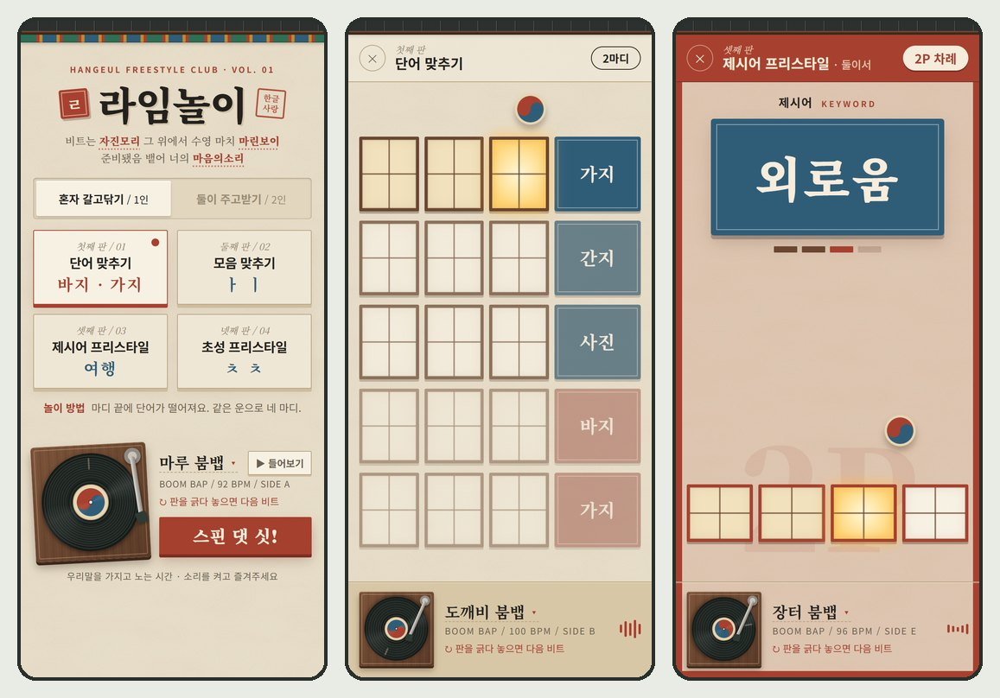
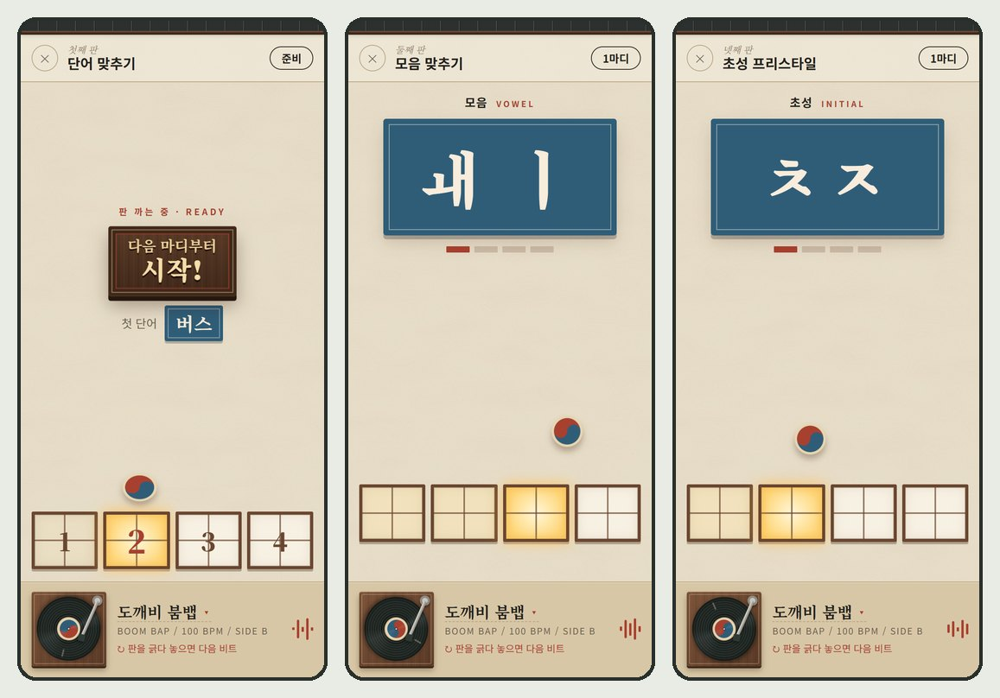
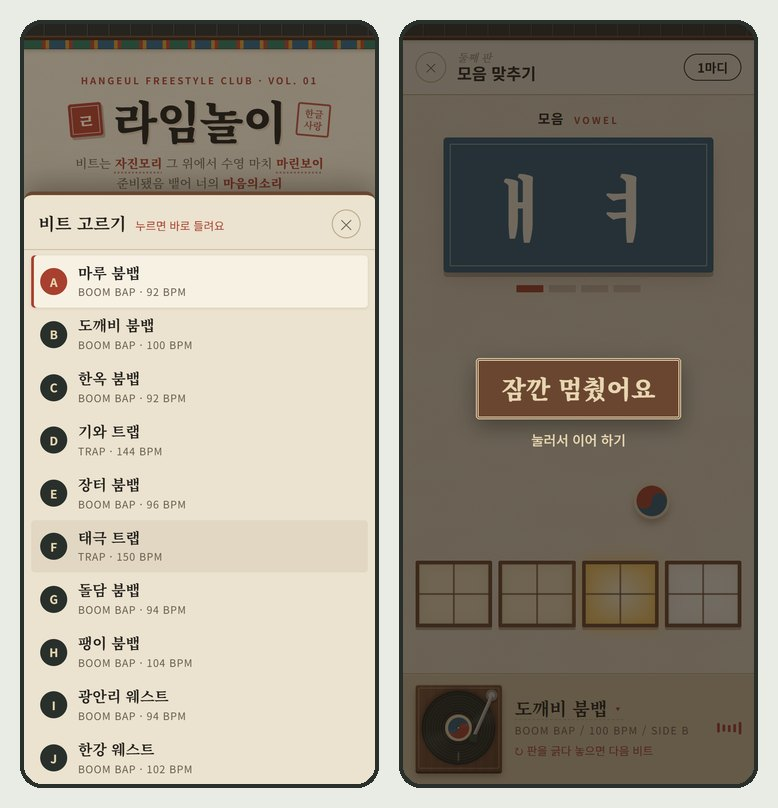

비트가 흐르고, 마디마다 화면에 단어가 떨어진다. 그 단어로 마디를 끝내면 된다. 바지가 뜨면 바지로, 다음 마디에 가지가 뜨면 가지로. 같은 운이 네 마디 이어지니 라임을 맞추며 프리스타일을 하게 된다. 단어 말고 모음(ㅏㅣ), 제시어(여행), 초성(ㅊㅊ)을 던져 주는 모드도 있고, 둘이서 번갈아 주고받을 수도 있다.
한글날을 앞두고 "한글을 가지고 노는 놀이"로 기획했다. 폰 브라우저에서 바로 하고, 설치는 없다. 주소는 gangmini.com/rhyme. 10월 15일에 시작해 19일에 올렸다. 이 글은 무엇으로 어떻게 만들었는지, 그리고 걸린 것들을 어떻게 풀었는지 적는다.

한눈에 보는 구조
게임에 서버는 없다. 박자를 세고, 문제를 고르고, 비트를 연주하는 일이 전부 방문자의 폰 안에서 돈다. 비트도 대부분 소리 파일이 아니라 코드로 적은 악보라서, 받는 양이 작다. 서버가 하는 일은 파일을 한 번 건네주는 것과 방문자 수를 세는 것뿐이다.
← 옆으로 밀어 보기 →
무엇을 왜 골랐나
| 자리 | 고른 것 | 이유 |
|---|---|---|
| 박자 | Web Audio API 의 시계 | 공과 단어가 비트에 딱 맞아야 한다. 타이머(setTimeout)로 박을 세면 폰에서 금방 밀린다. 소리 장치의 시계만 정확하다 |
| 화면 | 순수 HTML · CSS · JS | 그리는 건 칸과 도장과 공뿐이다. 프레임워크가 할 일이 없다. 빌드도 없어서 고치고 새로고침이면 끝 |
| 비트 | 코드로 합성 | 유튜브에서 받은 비트는 쓸 수 없다. 직접 만들면 저작권이 깨끗하고, 파일도 없다 |
| 단어 | 단어장 하나 + 자동 묶기 | 운·모음·초성 문제를 사람이 따로 만들지 않는다. 단어를 넣으면 묶음이 저절로 생긴다 |
| 배포 | Cloudflare Pages | 이 사이트가 이미 거기 있다. 폴더 하나 넣고 push |
| 방문 집계 | 기존 Fly.io 서버 | 범퍼카 때 만든 길에 이름 한 줄(rhyme)을 더했다 |
| 소스 | GitHub 비공개 저장소 | 기획 메모와 참고 자료가 같이 들어 있다. 게임 파일 자체는 사이트 저장소에 공개돼 있다 |
Web Audio API — 브라우저에서 소리를 만들고 섞고 예약하는 기능. 소리를 "지금"이 아니라 "정확히 몇 초 뒤"에 나게 예약할 수 있다.
BPM — 1분에 박이 몇 번 오는지. 100 BPM 이면 한 박이 0.6초, 4박인 한 마디가 2.4초다.
박자 — 화면은 소리 시계를 읽기만 한다
이 게임에서 가장 중요한 건 "공이 칸에 닿는 순간 = 비트의 박"이다. 그래서 박을 세는 곳을 한 군데로 정했다. 소리 장치의 시계(AudioContext.currentTime)다.
비트도 이 시계로 예약하고, 화면도 이 시계를 읽어서 그린다. 둘이 같은 시계를 보니 어긋날 수가 없다.
← 옆으로 밀어 보기 →
// 귀에 들리는 시각 — 소리가 스피커까지 가는 지연만큼 뺀다
now() = currentTime − outputLatency
// 지금 위치. bar 0 은 "다음 마디부터 시작!" 준비 마디
position() = (now() − t0) ÷ 한 박 길이 → { bar, beat 0~3, frac 0~1 }- 지연을 뺀다. 블루투스 이어폰은 소리가 0.1~0.2초 늦게 들린다. 시계 값 그대로 그리면 공이 소리보다 먼저 떨어진다. 브라우저가 알려 주는 출력 지연만큼 빼서 "귀에 들리는 시각"으로 그린다.
- 비트를 바꿔도 마디 번호가 이어진다. 플레이 중에 턴테이블을 돌리면 새 비트는 다음 마디부터 시작한다. 새 비트의 시작점을 "지금이 몇 번째 마디였나"에 맞춰 놓아서, 문제 순서도 2인 차례도 끊기지 않는다.
- 트랩은 반으로 센다. 160 BPM 트랩을 그대로 세면 한 마디가 1.5초라 문제가 너무 빨리 바뀐다. 트랩·드릴은 반 속도로 마디를 세고 화면에만 원래 BPM 을 적는다.
룩어헤드 예약 — 타이머는 폰에서 수십 ms 씩 늦게 깨기도 한다. 그래서 타이머는 "곧 올 소리들을 미리 예약하는" 일만 하고, 실제로 소리가 나는 시각은 소리 장치가 정확히 지킨다. 타이머가 좀 늦어도 0.15초 여유가 있어서 박이 밀리지 않는다.
한글을 쪼개서 라임 찾기
영어판 참고 영상에서는 DOG·BOG 처럼 끝소리가 같은 단어끼리 묶었다. 한국어 랩의 라임은 모음이다. 바지·가지·간지·사진은 글자가 달라도 모음이 ㅏ-ㅣ 로 같아서 라임이 된다. 다행히 한글은 글자를 기계적으로 쪼갤 수 있다. 완성형 한글 11,172자가 초성·중성·종성 순서대로 번호가 매겨져 있어서, 나눗셈 두 번이면 자모가 나온다.
code = 글자 − 0xAC00 // '가' 가 0
초성 = code ÷ 588 // 21 × 28 = 588
중성 = (code % 588) ÷ 28
종성 = code % 28 // 0 이면 받침 없음← 옆으로 밀어 보기 →
어떤 단어를 넣나 — 두 번 갈아엎었다
처음 단어장은 국어책 같았다. 사또, 버선, 맷돌. 랩에 넣을 말이 아니었다. 2·30대가 쓰는 말로 바꾸면서 갓생, 현타, 오픈런, 탕후루를 넣었는데, 이번엔 너무 좁았다. 탈덕, 떡락, 짤방, 팬덤 같은 말은 모르는 사람도 많고, 래퍼들도 잘 안 쓴다. 결국 기준은 "누구나 아는 말, 랩에 들어갈 만한 말"이 됐다. 그 기준으로 다시 채워 두 글자 680개, 세 글자 170개가 됐다.
같은 문제가 다시 안 나오게 — 카드 더미
무작위로 뽑으면 방금 나온 운이 금방 또 나온다. 모든 문제를 카드처럼 섞어 놓고 위에서 한 장씩 뽑는다. 다 뽑으면 다시 섞는데, 직전 카드가 맨 위에 오지 않게 한다. 단어 맞추기는 운 묶음 더미 하나에, 묶음마다 단어 더미가 또 있다. 같은 운이 다시 와도 다른 단어부터 나온다. 돌려 보니 단어 맞추기는 71판(약 12분) 동안 같은 운이 안 나왔고, 단어는 284개째까지 겹치지 않았다.
운(라임) — 여기서는 음절마다 모음의 순서. 받침까지 같으면(간지·산지) 더 센 라임이지만, 모음만 같아도 랩에서는 라임으로 들린다.
모드 네 개, 규칙은 함수 하나

| 모드 | 혼자 | 둘이 |
|---|---|---|
| 단어 맞추기 | 마디 끝(4박)에 단어. 같은 운 네 마디 | 두 마디씩 번갈아, 한 운을 둘이 나눈다 |
| 모음 맞추기 | 4마디 / 8마디마다 바뀜 | 같은 모음으로 한 사람당 두 / 네 마디 |
| 제시어 프리스타일 | 두 글자 / 세 글자 / 혼합(두·두·세), 4·8마디마다 | 같은 제시어로 한 사람당 두 / 네 마디 |
| 초성 프리스타일 | 4마디 / 8마디마다 | 같은 초성으로 한 사람당 네 마디 |
옵션이 많아 보이지만, 모드마다 다른 건 숫자 두 개뿐이다. 문제 하나가 몇 마디 가는지(period), 한 사람이 몇 마디씩 하는지(turn).
화면은 마디가 바뀔 때마다 seq.at(마디) 하나만 부른다. 그러면 지금 문제, 몇 번째 마디인지, 누구 차례인지, 도장 색이 다 나온다.
마디 번호만 알면 내용이 정해지니, 비트를 바꾸든 화면이 버벅이든 문제 순서가 꼬이지 않는다.
- 2인은 화면 전체가 차례 색이다. 1P 청, 2P 적. 테두리, 윗막대, 바탕, 칸 테두리까지 바뀌고 바닥에 큰 1P/2P 가 깔린다. 랩하는 사람은 화면을 자세히 볼 여유가 없어서, 곁눈질로도 알 수 있어야 했다.
- 단어 맞추기는 다음 줄들이 미리 보인다. 지금 마디가 맨 위, 아래로 네 마디가 기다린다. 다음 단어를 보면서 이번 마디를 끝낼 말을 고를 수 있다.
비트를 코드로 만들기
비트는 원래 직접 구해 올 생각이었다. 오기 전까지 임시로 쓰려고 코드로 드럼을 만들었는데, 그게 결국 비트 열두 개가 됐다.
비트 하나는 "16칸짜리 줄"로 적은 악보다. x 가 있는 칸에서 그 악기가 울린다.
kick: ["x......x.....x.."], // 1박, 3박 16분 앞, 4박 16분 뒤
snare: ["....x.......x..."], // 2·4박
hat: ["x.x.x.x.x.x.x.x."],
b808: true, roots: [29.35] // 킥마다 808 을 깐다. 음 높이 44.6Hz처음 만든 비트는 들어 보니 로파이처럼 감성적이었다. 내가 원한 건 드럼과 808 이 앞에 나오는 찐 힙합이었다. 왜 감성적으로 들리는지 따져 보니 네 가지였다.
| 감성적이던 이유 | 바꾼 것 |
|---|---|
| 화음 패드·전자피아노가 앞에 나옴 | 다 뺐다. 어두운 종소리·피아노 단음·짧은 스탭만 작게 |
| 킥이 부드러운 사인파 | 높은 데서 확 떨어지며 찌그러지는 "쿵" + 맨 앞 "탁" 클릭 |
| 하이햇이 그냥 잡음 | 실제 808 드럼머신처럼 사각파 6개를 겹친 쇳소리 |
| 808 이 짧게 끊김 | 다음 킥까지 끌고, 음이 바뀌면 미끄러져 넘어간다 |
← 옆으로 밀어 보기 →
듣지 않고 숫자로 확인했다
비트를 고칠 때마다 귀로 열두 개를 다 듣기는 어렵다. 같은 엔진을 화면 없이 오프라인으로 돌려(OfflineAudioContext) 몇 초짜리 소리로 뽑은 뒤 숫자를 쟀다.
템포가 의도한 BPM 인지, 비트끼리 크기가 비슷한지(RMS 약 0.3), 저음 비중은 얼마인지, 소리가 1 을 넘어 깨지는 데가 있는지.
처음엔 킥이 칠 때 순간 크기가 1.47 까지 올라가 폰 스피커에서 "빡" 하고 깨질 수 있었다. 맨 끝에 부드러운 리미터를 달아 모두 1 아래로 넣었다.
아리랑 리믹스 — 3박자를 4박자에
아리랑은 3박자다. 힙합 4박자에 그대로 얹으면 한 마디마다 어긋난다. 원곡 한 마디를 셋잇단으로 줄여 힙합 두 박에 넣었다. 하이햇과 장구(덩·쿵·덕)도 셋잇단으로 흔들어서 가야금 선율과 드럼이 같이 출렁이게 했다. 긴 음에는 가야금처럼 떨리는 농현을 넣었다.
808 — 롤랜드 TR-808 드럼머신의 낮은 베이스 드럼 소리. 지금 힙합에서는 길게 끌어 베이스 선율처럼 쓴다.
하프타임 — 박을 반으로 느끼는 것. 트랩은 140~160 BPM 이지만 스네어가 반만 와서 70~80 BPM 처럼 들린다.
AI 비트를 이음새 없는 루프로
코드 비트 말고 진짜 비트도 하나 넣고 싶었다. AI 로 만든 1분 22초짜리 비트가 있었는데, 이걸 무한 반복되는 8마디로 잘라야 했다. 반복하는 비트는 이음새가 조금만 어긋나도 매번 "툭" 하고 걸리고, 템포가 조금만 틀려도 반복할 때마다 공과 소리가 벌어진다.
← 옆으로 밀어 보기 →
- 템포는 세 번 쟀다. 8마디, 16마디, 24마디 간격으로 소리가 얼마나 닮았는지 각각 재서, 셋이 맞는 값을 골랐다. 91.57 BPM. 소수점까지 맞아야 몇 분 반복해도 공이 안 밀린다.
- 시작은 첫 박의 어택. 소리가 "탁" 하고 솟는 순간을 1마디 1박으로 잡았다.
- FLAC 으로 저장했다. MP3·AAC 는 인코더가 앞뒤에 아주 짧은 무음을 붙여서, 반복하면 그만큼 틈이 생긴다. FLAC 은 손실도 무음도 없다. 680KB.
- 처음 틀 때 0.3초 늦었다. 파일을 받고 푸는 시간이다. 소리를 켜는 첫 터치 때 미리 받아 두게 했다.
참고 영상과 같은 비트 — 베끼지 않고 재기
릴스에 같이 붙일 프리스타일 영상이 있었다. 그 영상의 비트와 게임 비트의 박이 맞아야 화면을 이어 붙일 수 있다. 영상 소리에서 목소리와 드럼을 소리 성질로 갈라 드럼만 남기고 쟀다. 템포는 정확히 100 BPM, 킥은 1박·3박 16분 앞·4박 16분 뒤, 스네어 2·4박, 808 높이 44.6Hz. 이 자리와 높이만 맞추고 선율은 새로 만들었다. 원곡을 그대로 쓰면 저작권 문제가 생긴다. 그게 '도깨비 붐뱁'이다.
턴테이블 — 긁어서 비트 바꾸기

처음엔 판을 한 바퀴 돌려야 비트가 바뀌었다. DJ 처럼 판을 잡고 앞뒤로 긁는 맛이 있어야 했다. 판을 잡은 손가락의 각도를 매 순간 재서 판을 그만큼 돌리고, 돌리는 빠르기를 "휘끼휘끼" 소리의 높이와 크기로 바꿨다. 손이 멈추면 속도가 줄어 소리도 멎는다. 잡고 있는 동안은 비트를 작게 낮춘다. 손을 떼면 "DJ, spin that shit!" 외침과 함께 다음 마디부터 다음 비트다. 90° 를 못 긁고 뗀 건 실수로 보고 무시한다.
비트가 열세 개로 늘자 원하는 비트를 찾으려고 계속 긁어야 했다. 비트 이름을 버튼으로 만들어 목록을 띄웠다. 버튼을 새로 늘리지 않아서 첫 화면이 여전히 한 화면에 들어간다.
한국적인데 힙하게 — 그리고 한 화면
방향은 "입체적, 질감, 세세한, 한국적인"이었다. 리듬 게임의 부품을 하나씩 한국 물건으로 바꿨다.
| 게임 부품 | 한국 물건 |
|---|---|
| 박자 칸 | 창호 문살. 지금 박의 창에 불이 켜진다 |
| 튀는 공 | 태극 구슬 |
| 라임 색 | 오방색 도장(낙관). 같은 운은 같은 색으로 "쾅" |
| 배경 · 머리 | 한지 질감, 기와 띠, 단청 띠 |
| 준비 알림 | 나무 현판 "다음 마디부터 시작!" |
| LP 라벨 | 태극 |
중간에 디자인 시안을 따로 만들어 반영했다. 잡지처럼 위에서 아래로 길게 읽는 화면이 됐는데, 막상 써 보니 버튼을 찾으려고 스크롤해야 했다. 시안에서는 질감·색·글꼴·문구만 가져오고, 배치는 기능이 한눈에 다 보이는 한 화면으로 되돌렸다. 두 버전을 탭 두 개로 나란히 띄워 비교하고 정했다.
"한 화면"은 지키기 어렵다. 옵션 버튼이 한 줄 늘 때마다 작은 폰에서 넘친다. 화면 크기 세 개(아이폰 SE 375×667, 보통 폰 390×844, 노트북 1366×657)에 혼자/둘이 × 모드 4개 = 8가지 조합, 모두 24개 화면을 헤드리스 크롬으로 열어 스크롤이 생기는지 재는 스크립트를 만들었다. 무언가 바꿀 때마다 돌렸다.
소리가 안 나요 — 두 번 다 게임 밖이었다
- 스피커가 음소거. 비트를 다섯 개 추가한 날, 소리가 하나도 안 났다. 게임이 내보내는 소리를 재 보니 정상(최종 출력 피크 0.88)이었고, 윈도 스피커가 음량 0%, 음소거였다.
- 에어팟이 케이스 안. 다른 날은 게임이 "준비"에서 안 넘어갔다. 윈도 기본 출력이 에어팟으로 잡혀 있었는데, 에어팟은 케이스 안이라 소리를 받지 않았다. 그러면 소리 장치의 시계가 멈춘다. 빈 페이지로 재 보니 1초 동안 시계가 0.011초 갔다. 박자를 전부 이 시계로 세니, 게임도 같이 멈춘다.
두 번째는 앱으로 나가면 사용자도 똑같이 겪을 일이다. 나중에 시계가 1.5초 동안 안 가면 "소리가 멈췄어요, 이어폰·스피커 연결을 확인해 주세요"가 뜨게 했다. 소리 시계 하나에 모든 걸 건 설계의 대가다. 정확한 대신, 시계가 서면 다 선다.
릴스 찍기 — 화면과 비트를 따로 녹화해서 붙였다
릴스용으로 정해진 단어가 정해진 순서로 나오는 장면이 필요했다(가지 → 바지, 팔로우 → 부탁 → 드립니다).
주소에 ?words= 를 붙이면 그 단어부터 나오는 숨은 기능을 처음부터 넣어 뒀다.
폰 화면 녹화로는 화질도 소리도 애매해서, 화면과 소리를 따로 뽑아 붙였다.
← 옆으로 밀어 보기 →
- 태극 공이 파란 원으로 찍혔다. 브라우저에선 멀쩡한데 녹화에서만 빨간 반쪽이 빠졌다. 공에 붙어 있던 움직임 최적화 설정(
will-change) 때문이었다. 녹화 동안 그 설정을 뺐다. - 찍고 나서 되돌렸다. 녹화하려고 지정 단어가 모자라면 같은 운으로 채우기, 첫 도장 색 고르기(
?color=red), 녹화용 공 설정 같은 걸 고쳤다. 다 찍은 뒤 그 커밋들을 통째로 되돌렸다. 촬영 편의를 위한 코드가 게임에 남으면 나중에 왜 있는지 모르는 코드가 된다.
올리기 전에, 그리고 아이폰으로 들어가 보고
내 컴퓨터에선 다 됐다. 하지만 이 사이트에 오는 사람 대부분은 릴스를 보고 폰으로 들어온다. 올리기 전에 "폰에서 랩하는 상황"을 하나씩 따져 봤다.
| 상황 | 그냥 두면 | 고친 것 |
|---|---|---|
| 랩하는 동안 화면을 안 만짐 | 30초 뒤 화면이 꺼진다 | 시작할 때 화면 꺼짐 막기(Wake Lock) |
| 아이폰 무음 스위치 | 웹 소리는 벨소리 취급이라 안 들린다 | 소리를 "음악 재생"으로 알린다(audioSession, 옛 iOS 는 소리 없는 오디오 하나를 같이 튼다) |
| 전화가 오거나 다른 앱에 갔다 옴 | 멈춘 채로 그대로 | 그 마디에서 멈추고, 돌아오면 "잠깐 멈췄어요" → 눌러서 이어 하기 |
| 비트 파일을 못 푸는 브라우저 | 시작을 눌러도 "준비"에서 멈춤 | 같은 소리 WAV 로 → 그래도 안 되면 다음 비트로 |
| 주소에 단어 대신 코드를 넣음 | 그 코드가 실행된다 | 주소로 받은 단어에서 태그가 될 글자를 지운다 |
올리고 아이폰으로 들어가 보니, 컴퓨터에선 한 번도 안 난 문제가 세 개 더 나왔다.
① 판부터 긁으면 비트가 안 나온다
들어오자마자 턴테이블을 긁었는데 아무 소리가 없었다. "▶ 들어보기"를 누르면 그제야 나왔다. 브라우저는 사람이 직접 건드리기 전엔 소리를 못 내게 막는다. 그런데 아이폰은 "건드렸다"로 쳐 주는 동작이 좁다.
← 옆으로 밀어 보기 →
② "디제이 스핀댓싯" 글자만 뜨고 소리가 없다
외침은 브라우저에 들어 있는 읽어 주기 목소리(speechSynthesis)로 냈었다. 아이폰은 이것도 손가락이 닿은 바로 그 순간에만 허락한다.
게임은 소리를 켜고 비트를 준비한 뒤에 외치니, 그때는 이미 늦었다.
외침을 1.4초짜리 소리 파일로 미리 만들어 두고, 비트와 같은 길(Web Audio)로 틀게 바꿨다. 비트가 나오면 외침도 나온다. 무음 모드에서도 같다.
③ 톤암을 누르면 판이 안 잡힌다
판 위로 내려와 있는 톤암(바늘 달린 막대)을 짚고 긁으면 가끔 안 됐다. 톤암 그림이 판 위에 겹쳐 있어서, 손가락이 판이 아니라 톤암을 누른 걸로 처리됐다.
톤암은 그림으로만 보이고 누르면 아래 판이 잡히게 했다(pointer-events: none). 마우스로는 잘 안 짚는 자리라, 손가락으로 해 봐야 알 수 있었다.
올리는 길
← 옆으로 밀어 보기 →
main.js?v=, style.css?v= 숫자를 올린다. Pages 가 js·css 를 4시간 캐시하기 때문이다.
방문자 수는 범퍼카 때 만든 길을 그대로 썼다. 페이지가 gangmini.com 에서 열리면 bamti-bomb 서버의 1×1 그림을 한 번 부르고(beacon.gif?s=rhyme), 서버가 그날 몇 명인지 센다.
서버 쪽은 받는 사이트 목록에 rhyme 한 줄, 관리 페이지에 표 하나를 더했다.
남은 일
- 녹음 → 영상 저장. 내 프리스타일을 비트·화면과 같이 영상으로 저장해서 바로 릴스에 올리게. 처음 기획의 핵심이자, 공유가 곧 홍보다
- 반응이 오면 같은 코드를 앱으로(Capacitor), 비트 팩 결제(RevenueCat)
- 댓글로 라임 이어 가기 커뮤니티 — 서버, 로그인, 신고·차단이 필요해서 뒤로 미뤘다
- 링크를 공유했을 때 뜨는 미리보기 이미지
main.js가 부르는 다른 모듈에도 버전 번호 — 지금은 고쳐 올리면 최대 4시간 동안 옛 파일이 섞일 수 있다
정리
| 고른 것 | 한 줄 이유 |
|---|---|
| 박은 소리 시계 하나로 | 공과 비트가 같은 시계를 보면 어긋날 수 없다 |
| 한글을 쪼개 문제를 자동으로 | 단어만 넣으면 운·모음·초성 문제가 생기고, 풀 수 없는 문제는 안 나온다 |
| 카드 더미 | 무작위는 같은 게 금방 또 나온다 |
| 모드 = 숫자 두 개 | 마디 번호만 알면 문제·차례·색이 정해진다 |
| 비트를 코드로 | 저작권이 깨끗하고 파일이 없다. 고칠 땐 숫자로 확인 |
| AI 비트는 FLAC 루프 | MP3 의 무음 한 조각이 루프를 망친다 |
| 한 화면 + 24개 화면 검사 | 폰에서 랩하는 사람은 스크롤할 손이 없다 |
| 화면·소리 따로 녹화 | 화질도 박자도 직접 맞출 수 있다 |
| 올리고 나서 진짜 폰으로 | 무음 스위치, 손 떼는 순간, 손가락 끝은 컴퓨터가 흉내 못 낸다 |
범퍼카에서 오래 걸린 건 AI 가 만든 3D 모델이었고, 이번에 오래 걸린 건 소리였다. 소리는 화면처럼 캡처로 확인할 수가 없어서, 비트를 고칠 때마다 녹음해서 숫자로 쟀다. 그리고 그 소리를 내 주는 장치(스피커, 에어팟, 아이폰의 무음 스위치)가 게임보다 먼저 문제를 일으켰다. 박자를 소리 시계 하나에 맡긴 덕에 공은 한 번도 비트에서 밀리지 않았지만, 그 시계가 서면 게임도 섰다. 정확함과 함께 그 시계를 지켜보는 장치까지 만들어야 했다.
게임은 gangmini.com/rhyme, 게임 파일은 gangmini_branding/rhyme, 방문 집계 서버는 bamti-bomb에 있다.